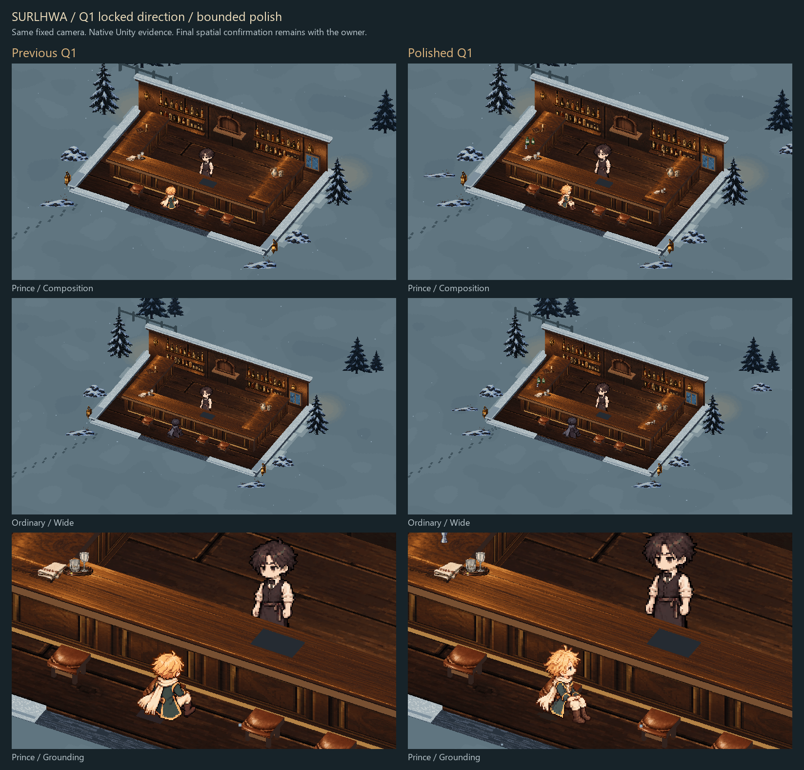

SURLHWA / Q1 bounded polish
Q1_BOUNDED_POLISH_READY_FOR_OWNER_REVIEW · Q1 is the active Production spatial baseline. Q2 is reference only.
Full report, validation and remaining debt · Preserved historical comparison

World plates hide UI/tools equally. Camera angle, orthographic size and exterior framing are unchanged. Polished actors are 12% larger around their contact pivots. Prince uses a side-quarter seated pose. Every native original remains linked.
Ordinary / Empty
Ordinary / Seated
Ordinary / Composition
Ordinary / Wide
Ordinary / Grounding
Ordinary / ContextUI
Ordinary / current normal-play UI
Prince / Seated
Prince / Composition
Prince / Wide
Prince / Grounding
Prince / ContextUI
Historical Prince ContextUI was a forced Q1 tool diagnostic, not normal brewing. Current actual focused tools and Q1 reaction reading are below; they are not equivalent gameplay phases.
Prince / current normal-play UI
Representative ACT 1 movement
Recorded controller poses, replayed at sampled timing (~12 Hz). Ordinary includes entrance; Prince starts from the retained earned checkpoint. Both include reaction/departure. Polished Prince uses the new seated pose; the historical Prince clip retained original art. No new turn animation, native-input, audio or 60 fps certification.
Bounded performance
10 seconds after 60 warmup frames. Uncapped Development Player, offscreen URP world plates. Historical samples were collected earlier; this is not a controlled hardware benchmark or GPU-time claim. New harness reserves sample storage before measurement; old GC includes list growth.
| View / actor / width | P50 / P95 ms | Renderers / materials | Draws / batches | GC mean bytes | Allocated MiB |
|---|
| Previous Q1 / Ordinary / 1280 | 0.483 / 0.593 | 208 / 39 | 423.0 / 423.0 | 11.80 | 67.59 |
| Previous Q1 / Ordinary / 1920 | 0.481 / 0.584 | 208 / 39 | 422.8 / 422.8 | 11.73 | 67.59 |
| Previous Q1 / Prince / 1280 | 0.490 / 0.588 | 208 / 39 | 423.3 / 423.3 | 11.91 | 67.59 |
| Previous Q1 / Prince / 1920 | 0.491 / 0.585 | 208 / 39 | 422.4 / 422.4 | 11.93 | 67.62 |
| Polished Q1 / Ordinary / 1280 | 0.490 / 0.571 | 225 / 46 | 430.8 / 430.8 | 0.00 | 67.70 |
| Polished Q1 / Ordinary / 1920 | 0.497 / 0.592 | 225 / 46 | 429.5 / 429.5 | 0.00 | 67.70 |
| Polished Q1 / Prince / 1280 | 0.503 / 0.630 | 225 / 46 | 431.4 / 431.4 | 0.00 | 67.74 |
| Polished Q1 / Prince / 1920 | 0.504 / 0.617 | 225 / 46 | 428.9 / 428.9 | 0.00 | 67.74 |
Hashes, camera bounds, checks and measurements